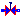

Basic components (pipes, valves)
Anton Haumer
Technical Consulting & Electrical Engineering
A-3423 St.Andrae-Woerdern, Austria
email: a.haumer@haumer.at
Dr. Christian Kral
Electric Machines, Drives and Systems
A-1060 Vienna, Austria
email: dr.christian.kral@gmail.com
Copyright © 1998-2015, Modelica Association, Anton Haumer, Christian Kral and Austrian Institute of Technology, AIT.
This Modelica package is free software and the use is completely at your own risk; it can be redistributed and/or modified under the terms of the Modelica License 2. For license conditions (including the disclaimer of warranty) see Modelica.UsersGuide.ModelicaLicense2 or visit https://www.modelica.org/licenses/ModelicaLicense2.
Extends from Modelica.Icons.Package (Icon for standard packages).
| Name | Description |
|---|---|
| IsolatedPipe | Pipe without heat exchange |
| HeatedPipe | Pipe with heat exchange |
|  Valve | Simple valve |
Pipe without heat exchange
Extends from Interfaces.Partials.TwoPort (Partial model of two port), Interfaces.Partials.SimpleFriction (Simple friction model).
| Name | Description |
|---|---|
| medium | Medium in the component |
| m | Mass of medium [kg] |
| T0 | Initial temperature of medium [K] |
| T0fixed | Initial temperature guess value or fixed |
| tapT | Defines temperature of heatPort between inlet and outlet temperature |
| h_g | Geodetic height (height difference from flowPort_a to flowPort_b) [m] |
| Simple Friction | |
| V_flowLaminar | Laminar volume flow [m3/s] |
| dpLaminar | Laminar pressure drop [Pa] |
| V_flowNominal | Nominal volume flow [m3/s] |
| dpNominal | Nominal pressure drop [Pa] |
| frictionLoss | Part of friction losses fed to medium |
| Name | Description |
|---|---|
| flowPort_a | |
| flowPort_b |
Pipe with heat exchange
Extends from Interfaces.Partials.TwoPort (Partial model of two port), Interfaces.Partials.SimpleFriction (Simple friction model).
| Name | Description |
|---|---|
| medium | Medium in the component |
| m | Mass of medium [kg] |
| T0 | Initial temperature of medium [K] |
| T0fixed | Initial temperature guess value or fixed |
| tapT | Defines temperature of heatPort between inlet and outlet temperature |
| h_g | Geodetic height (heigth difference from flowPort_a to flowPort_b) [m] |
| Simple Friction | |
| V_flowLaminar | Laminar volume flow [m3/s] |
| dpLaminar | Laminar pressure drop [Pa] |
| V_flowNominal | Nominal volume flow [m3/s] |
| dpNominal | Nominal pressure drop [Pa] |
| frictionLoss | Part of friction losses fed to medium |
| Name | Description |
|---|---|
| flowPort_a | |
| flowPort_b | |
| heatPort |
Simple valve
Simple controlled valve.
Standard characteristic Kv=f (y) is given at standard conditions (dp0, rho0),
Kv/Kv1 = Kv0/Kv1 + (1-Kv0/Kv1) * y/Y1 Kv/Kv1 = Kv0/Kv1 * exp[log(Kv1/Kv0) * y/Y1]where:
Kv0 ... min. flow @ y = 0Y1 .... max. valve openingKv1 ... max. flow @ y = Y1Flow resistance under real conditions is calculated by
V_flow**2 * rho / dp = Kv(y)**2 * rho0 / dp0
Extends from Interfaces.Partials.TwoPort (Partial model of two port).
| Name | Description |
|---|---|
| medium | Medium in the component |
| T0 | Initial temperature of medium [K] |
| T0fixed | Initial temperature guess value or fixed |
| tapT | Defines temperature of heatPort between inlet and outlet temperature |
| frictionLoss | Part of friction losses fed to medium |
| Standard characteristic | |
| LinearCharacteristic | Type of characteristic |
| y1 | Max. valve opening |
| Kv1 | Max. flow @ y = y1 [m3/s] |
| kv0 | Leakage flow / max.flow @ y = 0 |
| dp0 | Standard pressure drop [Pa] |
| rho0 | Standard medium's density [kg/m3] |
| Name | Description |
|---|---|
| flowPort_a | |
| flowPort_b | |
| y |